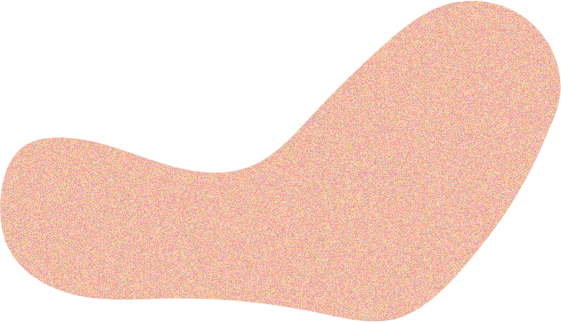
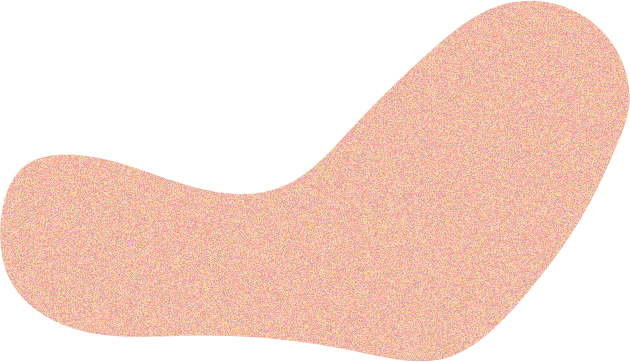
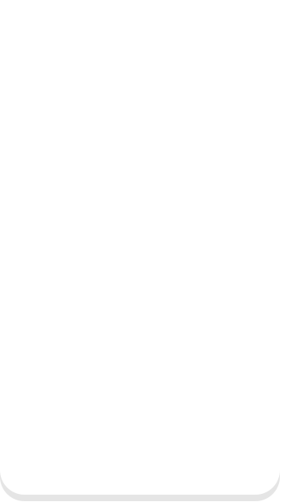

MBTI ENTJ
대담한 통솔자
최단시간
최고의 퀄리티
자기발전
도전과 성취
지적욕구
 

kimeunchae
design portfolio
2022
남들과 다른 것, 나만의 매력을 위해
새롭게 도전하는 것을 꺼리지 않고,
앞을 바라보는 열린마음으로
디자인에 임하고 있습니다.
안녕하세요
김은채입니다.
‘God in the Detail’
저는 다양한 UI/UX 요소 중
디테일을 가장 중요하게 생각합니다.
이러한 작은 부분을 놓치지 않고
남들보다 조금 더 잘 보기위해
노력하고 있습니다.
남들은 놓칠 수 있는 작은 부분까지
파악하고 신경 쓰는 것이
다른 이들과의 차별성을 자아내고
실력을 높이는 길이라고 생각합니다.
최단시간
최고의 퀄리티
자기발전
도전과 성취
지적욕구

덴마크 2019.07 - 2021.09
워킹홀리데이
낯선 덴마크에서 빠르게 적응하고,
계획했던 것들을 다 이루었던 것처럼
입사 후 낯선 환경 속에서도
누구보다 빠르게 적응하고 하나하나 달성할 것입니다.
말하기
듣기
독해
말하기
듣기
독해


1920 * 5460/SIZE
Nespresso
https://eunjjjae.github.io/nespressoWork August 2022
Tool
네스프레소는 출시 이후부터 지금까지 유럽 캡슐 커피
시장의 1위 자리를 지키고 있으며 디자인이 예쁜 것으로
유명하며 전용 캡슐 홀더만 해도 수십가지가 넘지만
소비자 편의를 생각하지 않은 홈페이지 디자인이
아쉬웠고 리뉴얼을 진행하였습니다.
네스프레소의 커피 캡슐을 연상시킬 수 있는
곡선 배너로 디자인함으로써 커피 브랜드의
아이덴티티를 강조하였습니다.
상단 네비게이션의 메뉴에 마우스를 호버하면
라인 애니메이션과 함께 서브 메뉴가 나옵니다.
반응형 홈페이지로 제작하여 편의에 신경썼습니다.
#422e27
#a3a3a3
#000
혁신적인 센트리퓨전 회전 추출
클래식한 에스프레소 고압 추출
처음 방문한 소비자를위해
VERTUO, ORIGINAL 에 대한 설명이
필요하다고 생각하여 디자인했습니다.
박스를 호버하면 각각 캡슐의 이미지가 등장합니다.


네스프레소가 가진 많은 차별점 중가장 큰 요소를 차지한다고
생각하는 리사이클 섹션이 약하다고 생각하여 캡슐, 커피 원두가
각각 어떻게 재활용되고 있는지 강조했습니다.
마우스를 호버하면 각각의 이미지가 차면서 설명이 나옴으로써
형태적인 재미도 더하였습니다 자칫 뻔하게 디자인될 수 있는
부분을 저만의 아이디어로 신선하게 풀어보았습니다.
Took
Work June 2022
Tool
What is took ?
took이란 패션에 관심많은 2, 30대가 증가하면서
평소 궁금했던 연예인이나 인플루언서의 패션 아이템을
서로 공유할 수 있는 패션 정보 공유 어플입니다.
패션 정보를 궁금해하는 유저들의 질문이
다양한 플랫폼에 제각각 흩어져있는 점이 아쉬워
정보 공유를 목적으로하는 어플을 개발해보았습니다.
Who use took app ?
유저 연령대
67%
2030대
2030대 67%, 10대 23%로
2030대가 가장 많이 사용
성별
28%
72%
여성72%, 남성 28%로
여성이 주요 사용
직업
79%
79% 회사원, 19% 학생으로
회사원, 아르바이트 층이 절반 이상
Needs
가입이 쉽고 인스타그램처럼 편하게
공유할 수 있으면 좋겠습니다.
직관적으로 디자인으로 이용하기 쉬웠으면 좋겠고,
실시간으로 활발한 정보공유가 되는 앱이면 좋겠어요!
착용한 제품을 최저가 구매 페이지로
바로 이동할 수 있으면 좋겠어요.
Style Guide
패션 제품이 부각될 수 있는 화이트 배경을 사용하여
깔끔하고 선명한 이미지를 강조하고
배경과 대비되는 코발트 블루를 사용하여
정보 어플의 전문성을 강조하였습니다.
#1910ff
#ddfecf
Main Color
#fff
Headline 50p
Sub1 22p
Aa
Sub1
Bold
25p
Sub2
Medium
23p
Sub3
Regular
19p
Icon
Icon State
연예인, 셀럽이 착용한 제품을 실시간으로 확인할수 있는
Real - Time 섹션과 유저들의 실시간 스타일링을
볼 수 있는 Just Pick 미리보기로 확인이 가능합니다.
클릭 수 높은 실시간 정보 및 광고
배너를 통해 한눈에 정보를 파악하기
쉽게 디자인했습니다.
돋보기 아이콘을 클릭하면
실시간 연예인, 셀럽들의
패션 아이템 정보를 확인할 수 있습니다.
게시글 아이콘을 클릭하면
유저들이 작성한 질문 리스트를
확인할 수 있습니다.
스트릿, 하이엔드, 클래식, 페미닌, 아메카지 5가지 스타일 분류 중 한가지를 선택하고
최신순, 인기순, 댓글, 좋아요 많은 순, 오래된 순서대로 상품을 볼 수 있습니다.

방금 막 SNS에 올라온 제품을
실시간으로 공유할 수 있다는 점이
가장 큰 장점입니다.
질문 리스트 화면에 있는 작성 아이콘을 클릭하여 내가 궁금한 정보도
다른 유저들에게 물어볼 수 있습니다. 캡처한 이미지와 함께 글을 작성할 수 있습니다.
정보가 궁금한 사진을 클릭하면 상세 이미지와 함께
제품 정보를 하단에서 확인할수 있습니다.
드래그하여 착용한 모든 제품의 정보를 볼 수 있고
제품 사진을 클릭하면 최저가로 구매할 수 있는
페이지로 이동됩니다.
렌즈 아이콘을 클릭하면 카메라 화면이 나타납니다. 왼쪽 하단에 있는 사진을
터치하여 갤러리에 있는 이미지를 불러올 수도 있고 직접 촬영할 수도 있습니다.
이미지 검색으로 도출된
제품의 최저가 정보와
구매할 수 있는링크, 비슷한
상품을 추천받을 수 있습니다.
하트 아이콘을 클릭하면 유저들의 실시간 스타일링을 확인할 수 있습니다
스타일링이 어려운 패션 입문자들에게도 도움을 줄 수 있는 섹션입니다.
패션 정보는물론 유저들간의 친목도 다질 수 있습니다.
카메라 아이콘을 클릭하여
본인의 스타일링과 정보도
업로드할 수 있습니다.